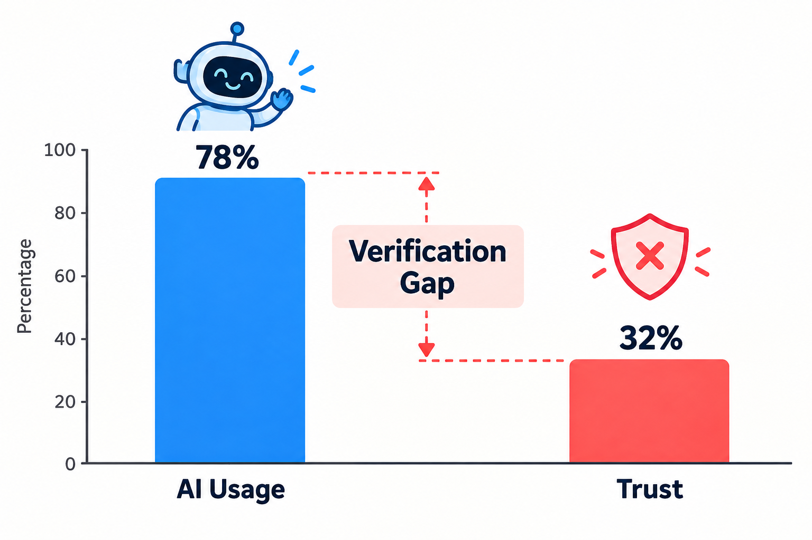

A year or two ago, AI in coding meant autocomplete. You typed half a line, and the tool guessed the rest.
That’s not where we are anymore.
"Today’s AI coding agents can read an entire codebase, plan a feature, write it across several files, run the tests, fix what breaks, and open a pull request — sometimes while the developer is in a meeting."
At MindSprout, we use these tools in our own AI and AR/VR projects, and we train developers and teams to work with them. The productivity is real. So is the risk.
That’s why the question in this article matters. Not “Are AI agents good?” but “How far should we trust them, and where?”
First, the Numbers: The Verification Gap
Developers aren’t rejecting AI. They’re using it heavily while keeping one eye open. Industry research reveals a massive divide between adoption and confidence:

Stack Overflow’s 2026 Developer Survey, with more than 30,000 responses, found that 74.2% of developers rated AI useful for implementation and 72.2% found it useful for debugging or refactoring. But trust has limits. Nearly half said they trust AI output when they can verify it themselves, and only 6.6% would trust AI with an important architectural decision.
Sonar’s 2026 State of Code survey shows how large AI’s role has become: developers say 42% of the code they commit is already AI-generated or assisted, and they expect that to reach 65% by 2027. Yet 96% don’t fully trust that AI-generated code is functionally correct, and only 48% say they always check it before committing.
The Critical Takeaway
Read that again. Almost everyone doubts the code. Only half consistently check it. That gap is where most security vulnerabilities, logic traps, and silent production regressions will come from.
1. AI-Generated Code: Fast, Confident, and Sometimes Wrong
AI-generated code has a particular quality: it looks finished. It’s well formatted, nicely named, and often comes with thorough comments. That superficial polish makes it dangerously easy to approve without really reading it.
Here’s a realistic example. Ask an agent for a function to fetch a user by username, and you might get something like this:
Naive string formatting that leaves your backend wide open:
# AI-generated version
def get_user(conn, username):
query = f"SELECT * FROM users WHERE username = '{username}'"
return conn.execute(query).fetchone()Bound parameters evaluated by the database driver:
# Safe version: Parameterised query
def get_user(conn, username):
return conn.execute(
"SELECT * FROM users WHERE username = ?", (username,)
).fetchone()It works. It passes a quick manual test. And it’s open to SQL injection, one of the oldest and most devastating security mistakes in web development.
This isn’t a rare edge case. Veracode’s 2026 GenAI Code Security Report found that the security pass rate of AI-generated code has stalled at around 56%. Even more interesting, coding-specialised models scored no better on security than general-purpose ones, at 51% and 52% respectively.
The Lesson
AI is optimised to produce code that works. Producing code that is secure, maintainable, and correct for your specific context is a completely different bar — and a human still has to hold it.
2. Debugging: Great at Symptoms, Risky with Causes
AI agents are genuinely good debugging partners. They read stack traces quickly, spot syntax typos and wrong variable names, and explain unfamiliar error messages in plain language.
But there’s a pattern we see often in our engineering workflows: the agent’s goal becomes “make the error go away,” not “find out why it happened.”
Imagine an order-processing script crashes with a KeyError because some orders have no amount. A quick AI “fix” might look like this:
Crash stopped, but data corrupted silently:
def total_amount(orders):
total = 0
for order in orders:
try:
total += order["amount"]
except KeyError:
pass # crash stopped... silently!
return totalIdentifies broken upstream records immediately:
def total_amount(orders):
missing = [o.get("id") for o in orders if "amount" not in o]
if missing:
raise ValueError(f"Orders missing amount: {missing}")
return sum(o["amount"] for o in orders)The crash is gone. But now the business is under-counting revenue in production, and nobody knows. The real question was never “how do we stop the crash?” It was “why do some orders have no amount in the first place?”
The Lesson
Let AI help you investigate. Don’t let it decide that a silenced error is a solved problem.
3. Testing: Who Decides What “Correct” Means?
Ask an agent to write tests, and it will happily produce dozens in seconds. That’s undeniably useful. But there’s a trap: AI often writes tests based on what the code currently does, not what it should do.
Consider this simple discount function with a subtle arithmetic bug:
def apply_discount(price, percent):
return price - percent # BUG: subtracts flat units, not a percentage!An AI agent reading this code to generate unit tests might generate:
Confirms the bug rather than catching it:
def test_apply_discount():
# Pass! But confirms 1000 - 10 = 990
assert apply_discount(1000, 10) == 990Written from business intent (10% of 1000 is 900):
def test_ten_percent_off():
# FAILS as intended: catches the bug!
assert apply_discount(1000, 10) == 900The first test passes. The bug survives. The test is simply confirming the mistake. The second test fails immediately — which is exactly what tests are built to do.
The Examination Rule
Humans should define what correct behaviour looks like. AI can then help write test variations, cover edge cases, and automate repetitive assertions. If the same AI writes the code and decides what counts as correct, you’re letting the student mark their own exam.
4. Code Review: The New Bottleneck
When code becomes cheap to write, something else becomes expensive: reading and validating it.
AI agents can produce massive pull requests in minutes. Someone still has to review them. Sonar’s survey found that 38% of developers say reviewing AI-generated code takes more effort than reviewing code written by human colleagues.
AI code reviewers can assist here. They’re good at catching styling mismatches, missing null checks, and common linting anti-patterns. But they cannot answer the questions that matter most in a real review:
The 4 Questions AI Reviewers Cannot Answer
- Business Alignment: Does this change match what the customer and business actually need right now?
- Architectural Coherence: Does it fit our system architecture, or quietly fight existing conventions?
- Data & Migration Impact: What happens to our active production users, schemas, and historical data?
- Accountability: Who is responsible and on-call if this change breaks in production at 2:00 AM?
That last point is crucial for engineering leadership: “The agent wrote it” is never an acceptable answer in an incident post-mortem. Responsibility stays squarely with people.
What Works in Real Engineering Practice:
- Work in Small, Focused Batches: Request agents to work in tiny, atomic PRs rather than 1,000-line monolithic diffs.
- Demand Assumption Logs: Require agents to explain their architectural reasoning and trade-offs in the pull request description.
- Automated Scanners as Filters: Run SAST and secret scanners as initial automated filters, not as final sign-offs.
- Named Human Approvers: Always require an accountable human engineer to stamp production deployments.
5. Developer Roles: From Writing Code to Owning Outcomes
So, will AI coding agents replace developers?
From what we see across our client deployments and university training programmes at MindSprout, the job isn’t disappearing — it’s moving up a level. Less time goes into raw syntax typing, and more time is invested in:
Clear Specifications
Writing explicit, unambiguous system specifications so coding agents implement the exact required behavior.
System Architecture
Designing how microservices, event streams, vector databases, and APIs fit together harmoniously.
Threat & Risk Modeling
Anticipating security vulnerabilities, data leaks, and edge-case failure modes before code is deployed.
Verification & Evaluation
Defining true correctness, stress testing agent outputs, and crafting automated evaluation suites.
The Junior Developer Paradox
Sonar found that junior engineers report the highest speed gains from AI (around 40%), but are also significantly more likely than seniors to say reviewing AI code takes intense cognitive effort. In other words: AI helps beginners produce more, but it doesn’t automatically help them understand more.
Our advice for students and early-career developers: Use AI, but never skip the fundamentals. You cannot review what you don't understand.
So, Should Developers Trust AI Coding Agents?
Our honest answer: Yes, but not equally, and never blindly. Trust should depend on how risky the task is and how easily the output can be verified.
At MindSprout Technologies, we apply a clear, three-tier Traffic Light Trust Framework across all software projects:
Boilerplate, Scaffolding & Utilities
CRUD templates, docstrings, regex patterns, unit test boilerplate, mock data generators, and refactoring with robust existing test suites.
Feature Logic, Database Queries & Integrations
Complex business logic, multi-table SQL queries, third-party API webhooks, state management flows, and async concurrency.
Security, Payments, Healthcare & Defense
Auth workflows, encryption routines, payment processing, database migrations, and systems in government, defense, or industrial safety.
At MindSprout, much of our work lives in the red zone: government platforms, defense-related simulation systems, and industrial compliance portals. In these areas, a small hallucinated assumption can be catastrophic. AI accelerates our delivery, but the closer we get to the red zone, the deeper our human verification becomes.
A Quick Practical Checklist
Actionable rules for engineering teams navigating the rise of agentic software development:
For Business Leaders & CTOs
- Set Explicit Review Policies: Define which code tiers (auth, billing, schema) require mandatory multi-human review.
- Track Incidents, Not Lines: Measure software stability, customer defects, and rollback rates rather than raw PR volume.
- Fortify CI/CD Testing: Invest heavily in automated regression tests and security SAST tooling before scaling agent usage.
- Preserve Human Accountability: Ensure every single production deployment has a named, accountable engineer.
- Train for Critical Review: Upskill development teams on auditing AI code rather than just generating prompts.
For Developers & Students
- Read Every Single Line: Never merge or commit code that you cannot explain line-by-line to a teammate.
- Define Tests Independently: Write or verify core requirement test assertions yourself before generating code.
- Inquire "Why", Not Just "What": Push the AI agent to justify its algorithms, dependencies, and assumptions.
- Flag Silent Error Handling: Treat suppressed exceptions, empty catch blocks, and modified tests as red flags.
- Hone Vanilla Fundamentals: Practice writing logic from scratch without AI to keep your architectural intuition razor sharp.
Our Honest Take
AI coding agents represent one of the most profound paradigm shifts software development has ever experienced. Teams that ignore them will unquestionably fall behind on delivery velocity.
But teams that trust them blindly will pay a heavy price later — through compounding security vulnerabilities, silent regressions, and bloated codebases that no living human truly understands.
"The winning approach sits in the middle: let AI do more of the typing, and let humans do more of the thinking."
At MindSprout Technologies, we help organizations adopt AI responsibly — from engineering custom AI-powered applications to training development teams to work effectively, safely, and creatively with agentic tools. If your team is exploring AI coding agents and wants a practical, risk-aware roadmap, we would love to connect.